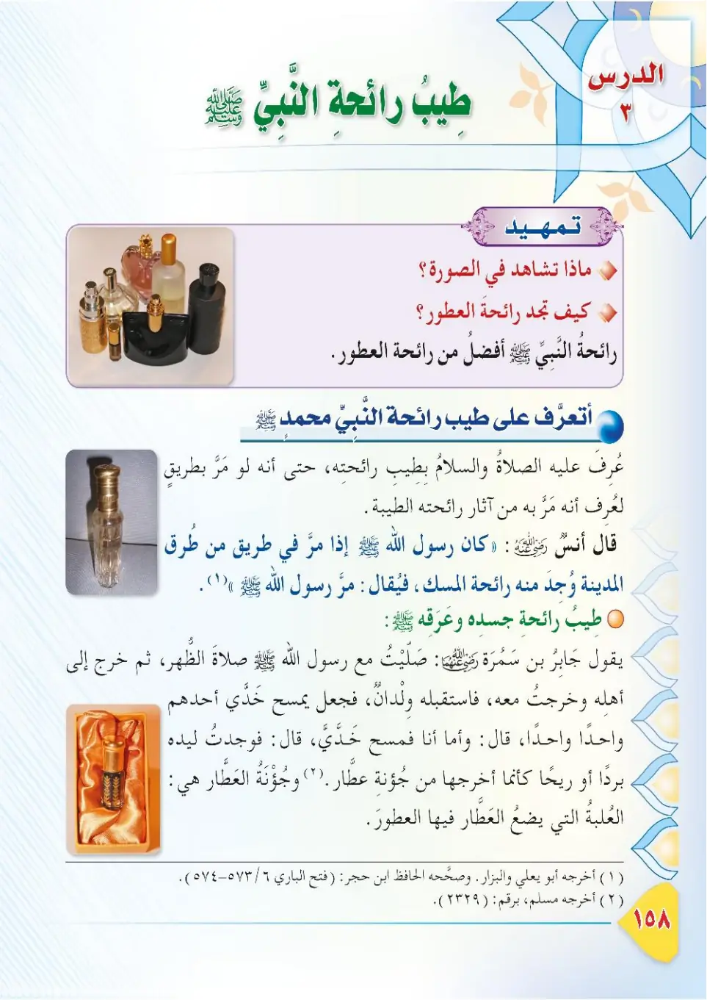
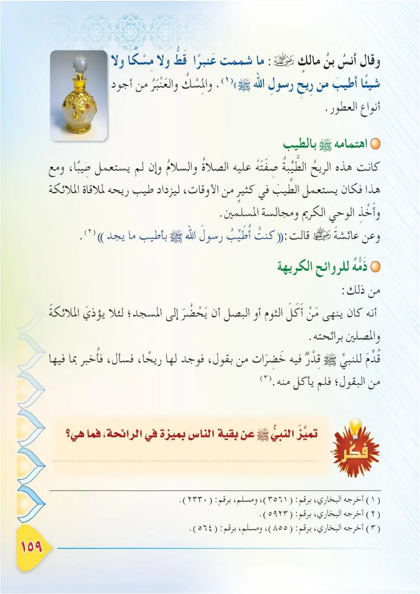
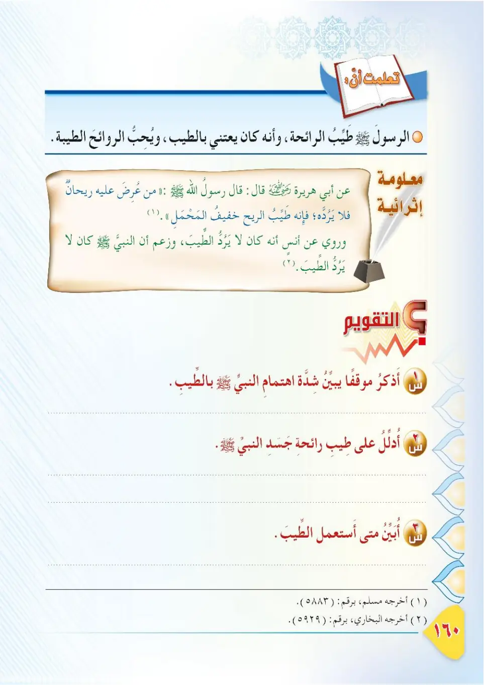
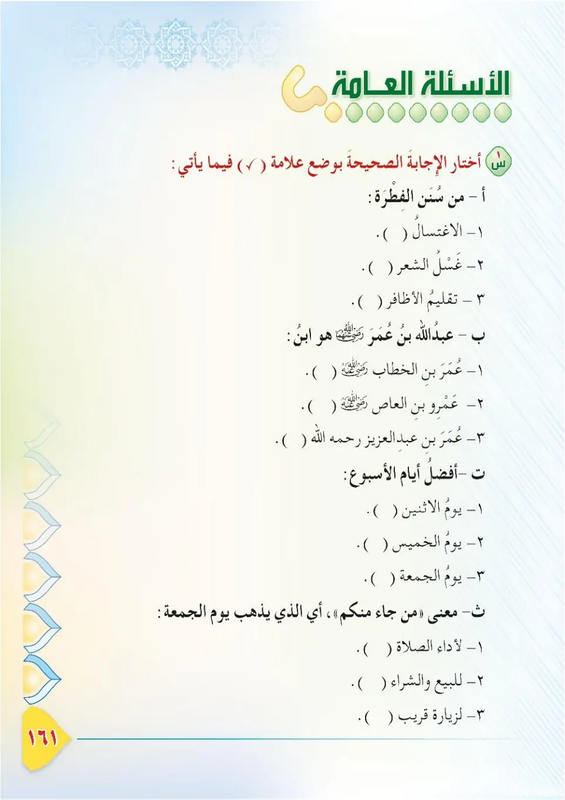
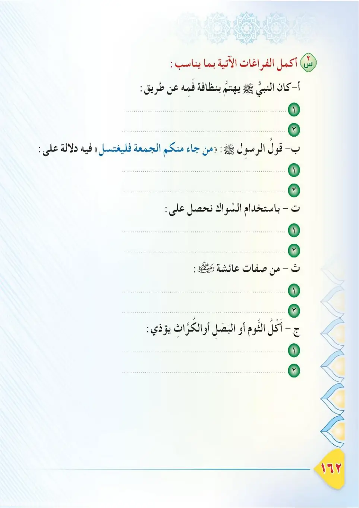
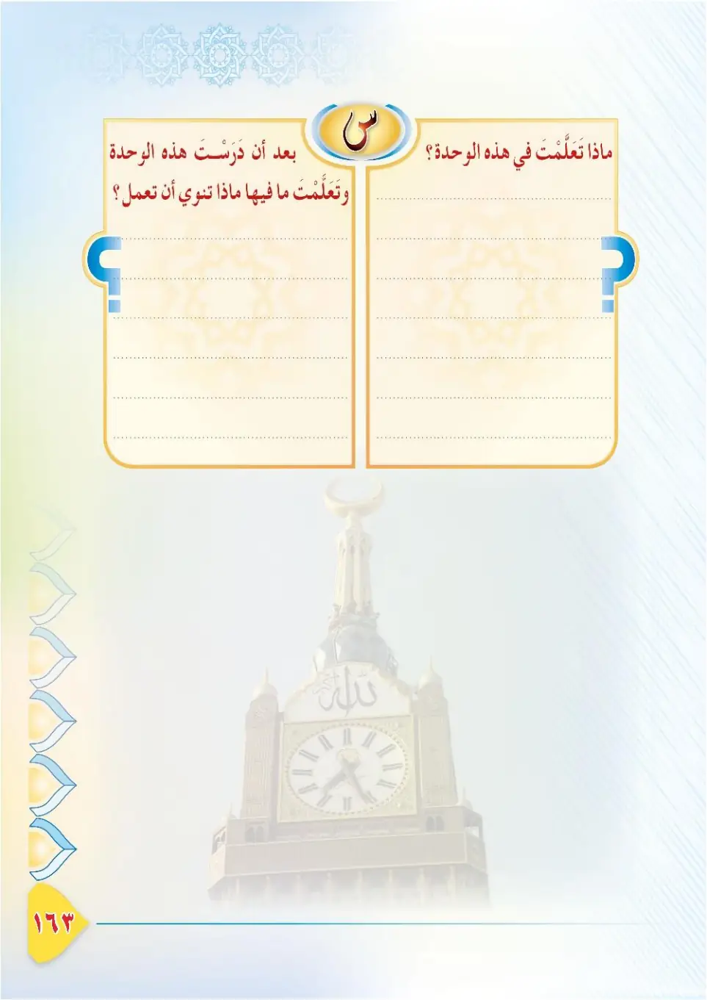
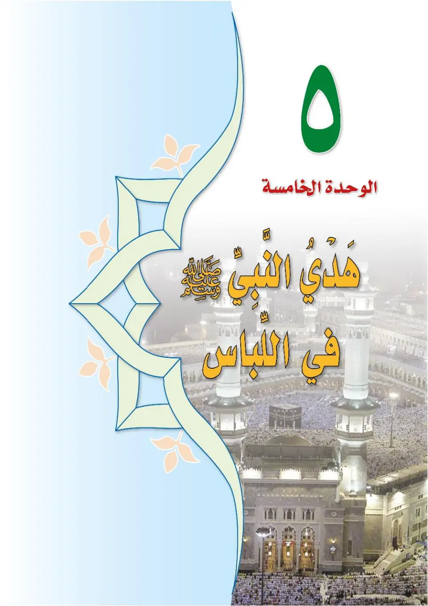
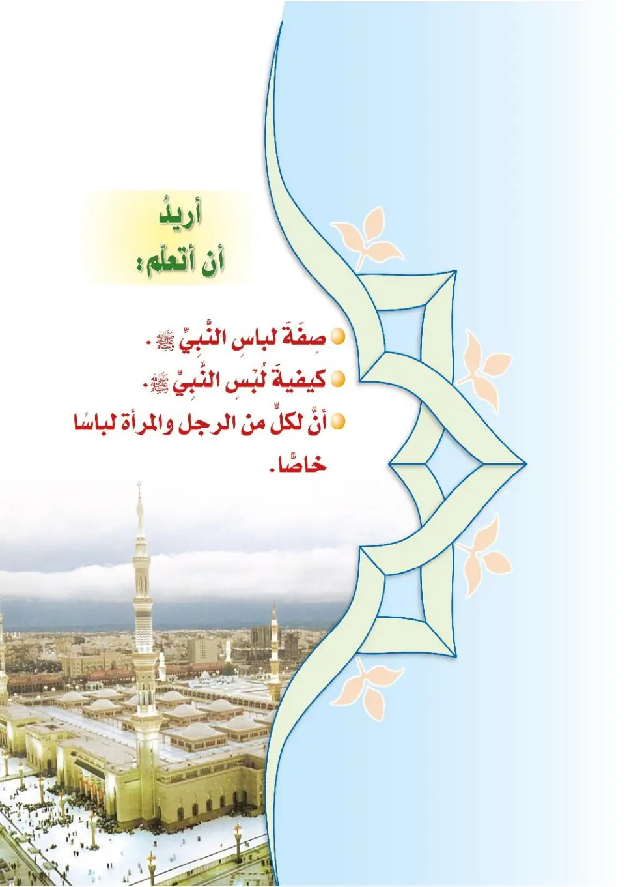

Stage 3·المرحلة الثالثة📖 Unit 4
الْعِنَايَةُ بِنَظَافَةِ الْفَمِّ وَطِيبِ رَائِحَةِ النَّبِيِّ ﷺ Care for Mouth Cleanliness and the Fragrance of the Prophet ﷺ
From the Textbookpp. 159–166








رَائِحَةُ الْمُؤْمِنِ يَجِبُ أَنْ تَكُونَ طَيِّبَةً؛ فَهُوَ حَرِيصٌ عَلَى نَظَافَةِ فَمِّهِ وَبَدَنِهِ. وَكَانَ النَّبِيُّ ﷺ أَطْيَبَ النَّاسِ رَائِحَةً؛ فَمَا سَبَبُ طِيبِ رَائِحَتِهِ ﷺ؟ نَتَعَرَّفُ عَلَى ذَلِكَ فِي هَذَا الدَّرْسِ.
Ra'ihatu al-mu'mini yajibu an takuna tayyibah; fahuwa harisun 'ala nadafati fammih wa badanih. Wa kana an-nabiyyu ﷺ atyaba an-nasi ra'ihatan; fama sababu tibi ra'ihatih ﷺ? Nata'arrafu 'ala dhalika fi hadha ad-dars.
The believer's smell must be pleasant, for he is keen on the cleanliness of his mouth and body. The Prophet ﷺ was the most fragrant of people; so what was the reason for his pleasant fragrance ﷺ? We will learn about that in this lesson.
முஃமினின் வாடை இனிமையாக இருக்க வேண்டும்; அவர் வாய், உடலின் தூய்மையில் கவனமானவர். நபி ﷺ மக்களில் மிகவும் நறுமணமானவர். அவர்களின் நறுமணத்திற்கு காரணம் என்ன? இந்தப் பாடத்தில் அறிவோம்.
كَانَ النَّبِيُّ ﷺ يَهْتَمُّ بِنَظَافَةِ فَمِّهِ بِالسِّوَاكِ؛ فَكَانَ يَسْتَاكُ عِنْدَ كُلِّ صَلَاةٍ، وَعِنْدَ النَّوْمِ، وَعِنْدَ الِاسْتِيقَاظِ.
Kana an-nabiyyu ﷺ yahtammu binadafati fammihi bis-siwaak; fakana yastaku 'inda kulli salat, wa 'inda an-nawm, wa 'inda al-istiqadh.
The Prophet ﷺ cared for the cleanliness of his mouth with the miswak; he used it before every prayer, before sleeping, and upon waking up.
நபி ﷺ மிஸ்வாக் மூலம் வாயின் தூய்மையைக் கவனித்தார்கள். ஒவ்வொரு தொழுகைக்கு முன்பும், தூங்கும்போதும், விழிக்கும்போதும் மிஸ்வாக் பயன்படுத்தினார்கள்.
وَنَهَى النَّبِيُّ ﷺ مَنْ أَرَادَ أَنْ يَأْتِيَ الْمَسْجِدَ أَنْ يَأْكُلَ الْبَصَلَ أَوِ الثُّومَ؛ حَتَّى لَا يُؤْذِيَ الْمُسْلِمِينَ بِرَائِحَتِهِمَا؛ فَقَالَ ﷺ: «مَنْ أَكَلَ ثُومًا أَوْ بَصَلًا فَلْيَعْتَزِلْنَا».
Wa nahaa an-nabiyyu ﷺ man arada an ya'tiya al-masjida an ya'kula al-basala aw ath-thuma; hatta la yu'dhiya al-muslimeena bi-ra'ihatihima; faqala ﷺ: «Man akala thuman aw basalan falya'tazilna».
The Prophet ﷺ forbade the one who wants to come to the mosque from eating onions or garlic, so as not to harm the Muslims with their smell; he said: "Whoever has eaten garlic or onion, let him keep away from us."
மஸ்ஜிதுக்கு வர விரும்பும் ஒருவர் வெங்காயம் அல்லது பூண்டு சாப்பிடுவதை நபி ﷺ தடுத்தார்கள்; அவற்றின் வாடையால் முஸ்லிம்களுக்குத் தொல்லை ஏற்படாமல் இருக்க. "யார் பூண்டு அல்லது வெங்காயம் சாப்பிட்டாரோ அவர் நம்மை விட்டும் விலகி இருக்கட்டும்" என்று கூறினார்கள்.
عَنْ عَائِشَةَ رَضِيَ اللهُ عَنْهَا قَالَتْ: كُنْتُ أُطَيِّبُ النَّبِيَّ ﷺ بِأَطْيَبِ مَا يَجِدُ، حَتَّى أَجِدَ وَبِيصَ الطِّيبِ فِي رَأْسِهِ وَلِحْيَتِهِ. أَخْرَجَهُ الْبُخَارِيُّ.
'An 'Aa'ishata radiyallahu 'anha qalat: kuntu utayyibu an-nabiyya ﷺ bi-atyabi ma yajidu, hatta ajida wabisa at-tibi fi ra'sih wa lihyatih. Akhrajahu al-Bukhari.
'A'ishah, may Allah be pleased with her, said: "I used to perfume the Prophet ﷺ with the best scent he could find, until I would see the shine of the scent on his head and his beard." Narrated by Al-Bukhari.
ஆயிஷா (ரலி) கூறினார்கள்: "நபி ﷺ அவர்களுக்கு அவர்கள் பெறும் சிறந்த நறுமணத்தை பூசுவேன்; அவர்களின் தலை, தாடியில் நறுமணத்தின் ஒளி காணும் அளவிற்கு." (புகாரி)
وَقَالَ أَنَسٌ رَضِيَ اللهُ عَنْهُ: مَا شَمِمْتُ عَنْبَرًا قَطُّ، وَلَا مِسْكًا، وَلَا شَيْئًا أَطْيَبَ مِنْ رِيحِ رَسُولِ اللهِ ﷺ. أَخْرَجَهُ مُسْلِمٌ.
Wa qala Anasun radiyallahu 'anhu: ma shamamtu 'anbaran qattu, wa la miskan, wa la shay'an atyaba min rihi rasulillahi ﷺ. Akhrajahu Muslim.
Anas, may Allah be pleased with him, said: "I have never smelled ambergris, musk, or anything more fragrant than the smell of the Messenger of Allah ﷺ." Narrated by Muslim.
அனஸ் (ரலி) கூறினார்கள்: "கஸ்தூரியையோ, இனிய நறுமணப்பொருளையோ, தூதர் ﷺ அவர்களின் வாடையைவிட மணமுள்ள எதையுமோ நான் வாசித்ததில்லை." (முஸ்லிம்)
وَعَنْ جَابِرِ بْنِ سَمُرَةَ رَضِيَ اللهُ عَنْهُ قَالَ: صَلَّيْتُ مَعَ رَسُولِ اللهِ ﷺ صَلَاةً، ثُمَّ خَرَجَ إِلَى أَهْلِهِ وَخَرَجْتُ مَعَهُ، فَاسْتَقْبَلَهُ وِلْدَانٌ، فَجَعَلَ يَمْسَحُ خَدَّيْ أَحَدِهِمْ وَاحِدًا وَاحِدًا. قَالَ: وَأَمَّا أَنَا فَمَسَحَ خَدِّي، قَالَ: فَوَجَدْتُ لِيَدِهِ بَرْدًا أَوْ رِيحًا، كَأَنَّمَا أَخْرَجَهَا مِنْ جُؤْنَةِ عَطَّارٍ. أَخْرَجَهُ مُسْلِمٌ.
Wa 'an Jabiri ibn Samurata radiyallahu 'anhu qal: sallaytu ma'a rasulillahi ﷺ salatan, thumma kharaja ila ahlih wa kharajtu ma'ah, fastaqbalahu wildanun, faja'ala yamsahu khadday ahadihim wahidan wahidan. Qala: wa amma ana famasaha khaddi, qala: fawajadtu liyadihi bardan aw rihan, ka'annama akhrajaha min ju'nati 'attar. Akhrajahu Muslim.
Jabir ibn Samurah, may Allah be pleased with him, said: "I prayed with the Messenger of Allah ﷺ, then he went out to his family and I went out with him. Some children met him, and he began to pat the cheek of each one of them. As for me, he patted my cheek, and I felt from his hand a coolness or a fragrance as if it had been taken out of a perfumer's scent box." Narrated by Muslim.
ஜாபிர் இப்னு ஸமுரா (ரலி) கூறினார்கள்: "தூதர் ﷺ அவர்களுடன் தொழுதேன்; பிறகு அவர் தம் குடும்பத்தினரிடம் சென்றார்; நானும் உடன் சென்றேன். சிறுவர்கள் அவர்களை எதிர்கொண்டனர்; ஒவ்வொருவரின் கன்னத்திலும் தடவினார்கள். என்னுடைய கன்னத்திலும் தடவினார்கள்; அவர்களின் கையில் குளிர்ச்சியையும், நறுமண வியாபாரியின் பெட்டியிலிருந்து எடுத்தது போன்ற நறுமணத்தையும் உணர்ந்தேன்." (முஸ்லிம்)
مِنْ أَسْبَابِ طِيبِ رَائِحَةِ النَّبِيِّ ﷺ: ١- نَظَافَةُ جَسَدِهِ، وَغَسْلُهُ وَجْهَهُ وَيَدَيْهِ دَائِمًا. ٢- اسْتِخْدَامُهُ السِّوَاكَ، وَسِوَاكُهُ لِأُمَّتِهِ. ٣- تَطَيُّبُهُ بِالطِّيبِ، وَتَطْيِيبُ أَزْوَاجِهِ لَهُ.
Min asbabi tibi ra'ihati an-nabiyyi ﷺ: 1. nadafatu jasadih, wa ghusluhu wajhahu wa yadayhi da'iman. 2. istikhdamuhu as-siwaak, wa siwakuho li-ummatih. 3. tatyibbuhu bit-tib, wa tatyibu azwajihi lah.
Among the reasons for the pleasant fragrance of the Prophet ﷺ:
1. The cleanliness of his body, and his constant washing of his face and hands.
2. His use of the miswak, and his urging of his nation to use it.
3. His perfuming himself and his wives perfuming him.
நபி ﷺ அவர்களின் நறுமணத்திற்கான காரணங்கள்:
1. உடலின் தூய்மை; முகம், கைகளை எப்போதும் கழுவுதல்.
2. மிஸ்வாக் பயன்பாடு; தம் சமுதாயத்திற்கு மிஸ்வாக்கை அறிவுறுத்தல்.
3. நறுமணம் பூசுதல்; தம் மனைவியர் அவருக்கு நறுமணம் பூசுதல்.